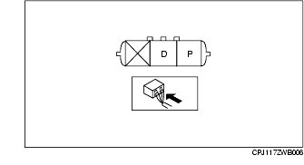
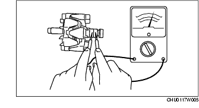
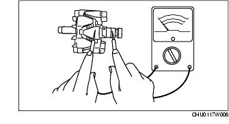
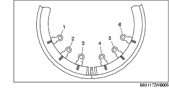
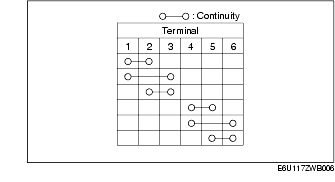
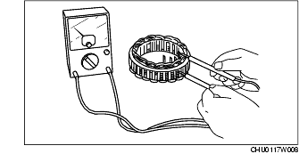
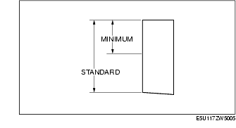
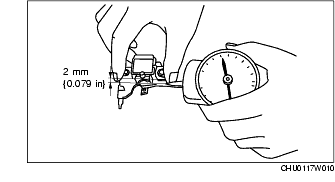
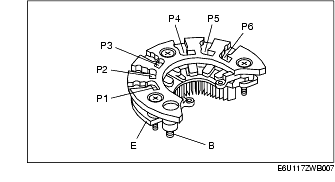
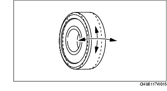

Workshop Manual ➭ ENGINE ➭ CHARGING SYSTEM[L8, LF] ➭ GENERATOR INSPECTION [L8, LF]
GENERATOR INSPECTION [L8, LF]
id0117a6800300
• Do not apply direct battery positive voltage to generator terminal D, otherwise it could cause damage to the internal parts (power transistor) of the generator.
Generator Warning Light
-
Verify that the drive belt deflection/tension is correct. (See DRIVE BELT INSPECTION [L8, LF].)
-
With the ignition switch turned to the ON position, verify that the generator warning light illuminates.
• If it does not illuminate, inspect the generator warning light and the wiring harness.
• If it does not go out, inspect if any one of the following DTCs in the on-board diagnostic system are displayed: P0112, P0113, P2502, P2503, P2504. (See DTC TABLE [L8, LF].)
Generator
Voltage
-
Verify that the drive belt deflection/tension is correct. (See DRIVE BELT INSPECTION [L8, LF].)
-
Verify that the generator rotates smoothly without any noise while the engine is running.
• If there is any noise, find the cause and repair or replace the generator.

Generator standard voltage [IG-ON]Terminal B: B+Terminal P: Approx. 1 V or lessTerminal D: Approx. 0 VGenerator standard voltage [Idle, 20 °C {68 °F}]Terminal B: 13-15 VTerminal P: Approx. 3-8 VTerminal D: Turn the electrical loads (headlights, blower motor, rear window defroster) on and verify that the voltage reading increases.
Current
• Since the charging current decreases rapidly after starting the engine, carry out the following procedure quickly, and read the maximum current value.
-
Verify that the drive belt deflection/tension is correct. (See DRIVE BELT INSPECTION [L8, LF].)
-
Connect a tester, which can read 120 A or more, between generator terminal B and the wiring harness.
-
Connect the negative battery cable. (See BATTERY REMOVAL/INSTALLATION [L8, LF].)
• When the electrical load on the vehicle is low, the specified current cannot be verified although the generator is normal. In this case, increase the electrical load (Leave the headlights turned on for a while, then discharge the battery, or use a similar method.) and recheck. • When the generator itself or the ambient temperature are too high, the specified current also cannot be verified. In this case, cool down the generator and recheck.
- Turn the following electrical loads on and verify that the current reading increases more than the minimum value indicated below.
- If it is not as specified, go to the PCM and generator shearing inspection. (See PCM and generator shearing inspection.) • Headlights (high-beam) • Blower motor (HI) • Rear window defroster • Brake lights
Generator generated current minimum value70 % of the nominal output current (nominal output current: 100 A)[Ambient temp. 20 °C {68 °F}, voltage 13.0-15.0 V, both engine and generator are hot]
PCM and generator shearing inspection

*1 : Headlights, blower motor, rear window defroster, and brake lights. *2 : If the generator field coil duty value does not change when electrical loads (such as headlights, blower motor, rear window defroster, brake lights) are on or off, inspection with discharged battery is needed.
Generator Inner Parts
Rotor

• If not within the specification, replace the rotor.
Generator rotor resistance (between slip rings) [20 °C {68 °F}]2.0-2.3 ohm

• If there is continuity, replace the rotor.
• If the slip ring surface is rough, use a lathe or fine sandpaper to smooth it.
Stator coil


• If there is any malfunction, replace the stator.
• If there is continuity, replace the stator coil.

Brush

• If any brush is worn almost to or beyond the limit, replace all of the brushes.
Generator brush lengthStandard: 22.5 mm {0.89 in}Minimum: 5.0 mm {0.20 in}
Brush spring
-
Measure the force of the brush spring using a spring pressure gauge.
-
Read the spring pressure gauge at the brush tip projection of 2 mm {0.079 in}.

• Replace the brush spring if necessary.
Generator brush spring forceStandard: 4.1-5.3 N {0.42-0.54 kgf, 0.92-1.19 lbf}Minimum: 1.7 N {0.17 kgf, 0.38 lbf}
Rectifier (Using an analog circuit tester)

• If not as specified, replace the rectifier.
Rectifier (Using a digital circuit tester)
• If not as specified, replace the rectifier.
Bearing
